Academic Web Scheduling: First Lessons, Continuation, Rescheduling, and Exceptions
功能编号：ACADEMIC_SCHEDULING_MASTER 版本：20261102A 排版顺序：先完整中文版，再完整英文版 Layout: Complete Chinese section first, followed by the complete English section
截图使用隔离培训数据并对应当前操作入口；不同账号的菜单和权限可能不同。涉及合同、财务、正式排课或家长发送时，先核对对象与系统状态。 / Screenshots use isolated training data and current workflow entries. Menus and permissions vary by account. Verify the target and system state before contracts, finance actions, formal scheduling or parent publication. 一份文档只讲一个功能。 网页端与小程序端分开；员工按编号一步一步操作。 One document covers one function only. Web and Mini Program guides are separate.
中文版 · 操作前准备
点击任何按钮前，先完成这四项准备
准备
使用本人账号和岗位对应工作台。
除非主管明确授权，否则只使用培训数据。
准备正确的对象、日期、负责人和所需资料。
把 PDF 与系统并排打开，每次只做一个编号步骤。
禁止
不使用同事账号。
不猜测姓名、金额、日期、状态或缺失字段。
结果不明确时不重复点击保存、应用、批准、发布或发送。
页面不一致时立即停止并询问负责人。
中文版 · 完整步骤总览 · 1/2
教务网页端排课：首次排课、续排、调课与异常闭环
1确认使用本人管理工作台。
2先判断业务请求类型。
3首次排课或续排进入学生页面。
4打开完整学生列表或使用搜索。
5搜索并核对学生。
6打开学生详情。
7打开快速排课。
8已有请求进入排课执行工单。
中文版 · 完整步骤总览 · 2/2
教务网页端排课：首次排课、续排、调课与异常闭环
9检查目标工单和负责人。
10核对课包余额和财务门禁。
11记录家长可上课时间。
12核对老师可用时间与例外。
13确认候选时间并跟进家长。
14填写快速排课字段。
15查找老师并先预览。
16确认后使用 Schedule 排课。
17特殊单次课程按类型创建。
18调课时明确原课次和范围。
19取消、请假和换老师关联原课次。
20处理冲突。
21核对正式课表并记录结果。
22未完成事项进入交接。
中文流程 · 第 1 步，共 22 步
确认使用本人管理工作台。
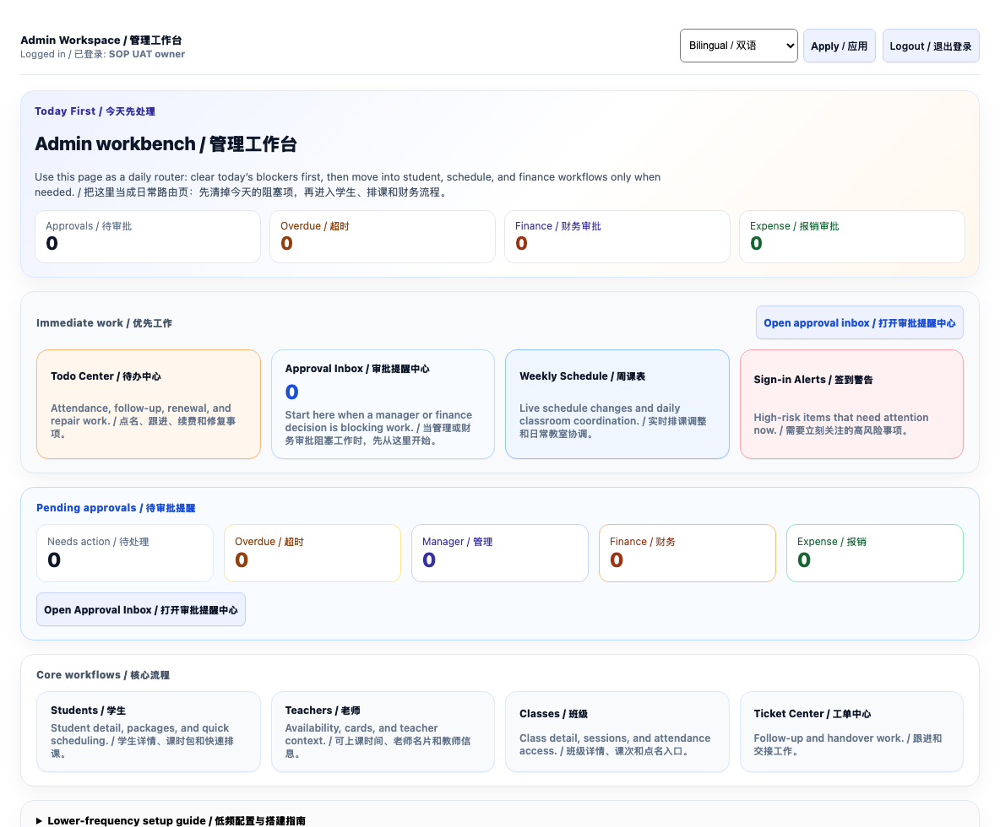
本人管理工作台入口。 / Own admin workspace.
请按顺序完成
登录本人账号，核对页面显示 Admin Workspace / 管理工作台。
菜单与权限不一致时联系管理员。
完成标志： 看到管理工作台、左侧菜单和本人账号。
立即停止： 登录后进入老师端、家长端或没有左侧菜单时停止。
中文流程 · 第 2 步，共 22 步
先判断业务请求类型。
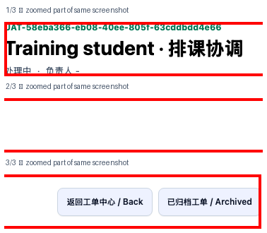
隔离环境示例；截图展示相关页面，具体操作以文字及当前界面为准。 / Isolated training example; screenshot provides context. Follow the text and current interface. 分段放大同一真实截图，按 1→2→3 阅读。 / Enlarged parts of one real screenshot, in order.
请按顺序完成
区分新排、续排、调课、取消、请假和换老师。
已有协调工单时优先从对应工单进入，避免重复处理。
完成标志： 你能明确说出本次使用哪条入口路线。
立即停止： 无法确认学生、课程或请求类型时停止。
中文流程 · 第 3 步，共 22 步
首次排课或续排进入学生页面。
隔离环境示例；截图展示相关页面，具体操作以文字及当前界面为准。 / Isolated training example; screenshot provides context. Follow the text and current interface.
请按顺序完成
在工作台打开 Students / 学生。
准备好学生姓名和课程；不要凭相似姓名选择。
完成标志： 页面标题显示 Students / 学生。
立即停止： 点击后进入新增家长链接或其他页面时停止并返回管理首页。
中文流程 · 第 4 步，共 22 步
打开完整学生列表或使用搜索。
隔离环境示例；截图展示相关页面，具体操作以文字及当前界面为准。 / Isolated training example; screenshot provides context. Follow the text and current interface.
请按顺序完成
如首页展示的是队列视图，可选择 Show full list / 查看完整列表。
也可以使用页面筛选定位学生；按实际显示的入口操作。
完成标志： Full List / 完整列表被选中。
立即停止： 完整列表仍显示 0 人或页面报错时停止。
中文流程 · 第 5 步，共 22 步
搜索并核对学生。
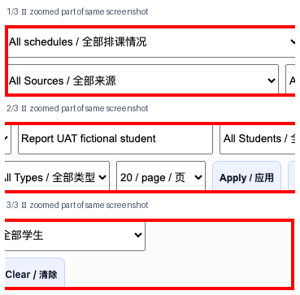
隔离环境示例；截图展示相关页面，具体操作以文字及当前界面为准。 / Isolated training example; screenshot provides context. Follow the text and current interface. 分段放大同一真实截图，按 1→2→3 阅读。 / Enlarged parts of one real screenshot, in order.
请按顺序完成
输入学生姓名，点击 Apply / 应用。
多位同名时核对学生编号及档案，不要猜测。
完成标志： 结果区显示目标学生且姓名完全一致。
立即停止： 出现同名学生时不要猜，先用学校、年级、家长或 ID 核对。
中文流程 · 第 6 步，共 22 步
打开学生详情。
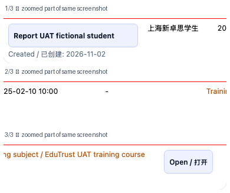
隔离环境示例；截图展示相关页面，具体操作以文字及当前界面为准。 / Isolated training example; screenshot provides context. Follow the text and current interface. 分段放大同一真实截图，按 1→2→3 阅读。 / Enlarged parts of one real screenshot, in order.
请按顺序完成
点击正确学生进入 Student Detail / 学生详情。
确认学生、课程和负责人。
完成标志： 页面顶部显示正确学生姓名和 Student Detail / 学生详情。
立即停止： 姓名、学校、年级或 ID 不一致时立即返回学生列表。
中文流程 · 第 7 步，共 22 步
打开快速排课。
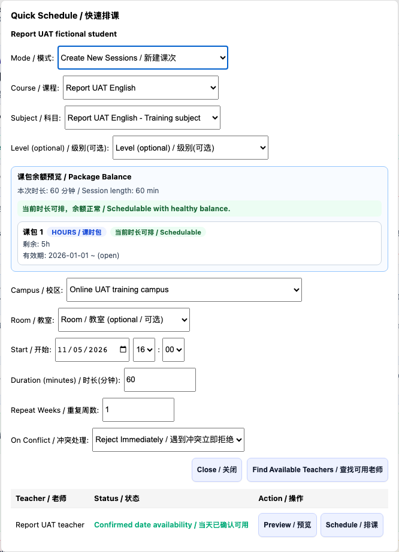
学生页面的快速排课弹窗。 / Quick Schedule dialog on the student page.
请按顺序完成
在学生页找到 Quick Schedule / 快速排课并打开弹窗。
核对弹窗上的学生姓名。
完成标志： 页面滚动到 Quick Schedule 区域或打开快速排课表单。
立即停止： 系统推荐先协调、存在未付款课包或门禁时不要强行排课。
中文流程 · 第 8 步，共 22 步
已有请求进入排课执行工单。
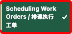
隔离环境示例；截图展示相关页面，具体操作以文字及当前界面为准。 / Isolated training example; screenshot provides context. Follow the text and current interface.
请按顺序完成
打开 Scheduling Work Orders / 排课执行工单，找到对应请求。
工单与学生页面是不同入口，按当前任务选择。
完成标志： 页面标题显示排课执行工单。
立即停止： 不要误点 Ticket Center / 工单中心或 Weekly Schedule / 周课表。
中文流程 · 第 9 步，共 22 步
检查目标工单和负责人。
隔离环境示例；截图展示相关页面，具体操作以文字及当前界面为准。 / Isolated training example; screenshot provides context. Follow the text and current interface. 分段放大同一真实截图，按 1→2→3 阅读。 / Enlarged parts of one real screenshot, in order.
请按顺序完成
打开工单，核对学生、要求、当前状态和负责人。
已有他人负责时先协调，避免重复排课。
完成标志： 目标工单已打开，负责人和截止时间明确。
立即停止： 同一请求存在两张工单或负责人冲突时停止并合并判断。
中文流程 · 第 10 步，共 22 步
核对课包余额和财务门禁。
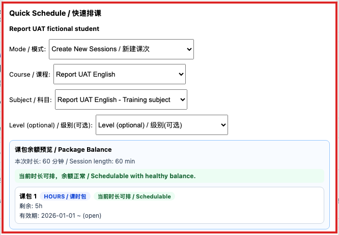
隔离环境示例；截图展示相关页面，具体操作以文字及当前界面为准。 / Isolated training example; screenshot provides context. Follow the text and current interface.
请按顺序完成
在学生档案和快速排课弹窗核对课程、余额、有效期与可排状态。
有阻塞时按提示联系教务或财务，不要绕过门禁。
完成标志： 正确课包显示可排课且余额足够。
立即停止： 缺少有效课包、余额不足、过期或财务门禁未通过时停止。
中文流程 · 第 11 步，共 22 步
记录家长可上课时间。
隔离环境示例；截图展示相关页面，具体操作以文字及当前界面为准。 / Isolated training example; screenshot provides context. Follow the text and current interface.
请按顺序完成
在协调工单记录可用日期、时间范围、地点和课程需求。
不确定的时间先向家长确认，保留下一次跟进时间。
完成标志： 当前工单显示家长时间和下一次跟进日期。
立即停止： 家长时间只有聊天截图但没有结构化记录时停止正式排课。
中文流程 · 第 12 步，共 22 步
核对老师可用时间与例外。
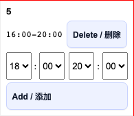
隔离环境示例；截图展示相关页面，具体操作以文字及当前界面为准。 / Isolated training example; screenshot provides context. Follow the text and current interface.
请按顺序完成
查看老师日期可用时段；未提交时段不等于老师拒绝。
特殊时间按工单发起例外确认；回复不会自动创建课次。
完成标志： 候选老师有有效 Availability 或已明确接受例外时间。
立即停止： 老师尚未确认特殊时间时停止 Apply。
中文流程 · 第 13 步，共 22 步
确认候选时间并跟进家长。
隔离环境示例；截图展示相关页面，具体操作以文字及当前界面为准。 / Isolated training example; screenshot provides context. Follow the text and current interface.
请按顺序完成
根据家长和老师的时间生成或整理候选，并记录发送与回复。
截图为工单沟通示例；具体候选以实际记录为准。
完成标志： 工单阶段显示候选已发送，并有下一次跟进时间。
立即停止： 系统没有候选时间时保留工单，不强行创建课次。
中文流程 · 第 14 步，共 22 步
填写快速排课字段。
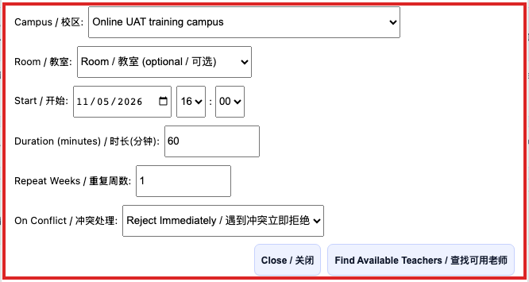
隔离环境示例；截图展示相关页面，具体操作以文字及当前界面为准。 / Isolated training example; screenshot provides context. Follow the text and current interface.
请按顺序完成
选择课程、科目、校区、教室、开始时间、时长、重复周数和冲突处理。
线下地点按系统要求选择教室；核对余额和日期。
完成标志： 字段完整，课包余额预览显示可排课。
立即停止： 课程、地点、日期或时长与家长确认不一致时停止。
中文流程 · 第 15 步，共 22 步
查找老师并先预览。
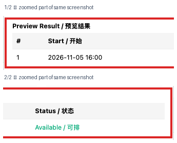
隔离环境示例；截图展示相关页面，具体操作以文字及当前界面为准。 / Isolated training example; screenshot provides context. Follow the text and current interface. 分段放大同一真实截图，按 1→2→3 阅读。 / Enlarged parts of one real screenshot, in order.
请按顺序完成
点击 Find Available Teachers / 查找可用老师，在候选老师行点击 Preview / 预览。
逐行核对可排或冲突结果，包括重复周数。
完成标志： 预览中所有冲突检查通过，老师、地点和课包正确。
立即停止： 出现任何冲突、旧预览或老师不匹配时停止。
中文流程 · 第 16 步，共 22 步
确认后使用 Schedule 排课。
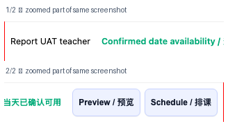
隔离环境示例；截图展示相关页面，具体操作以文字及当前界面为准。 / Isolated training example; screenshot provides context. Follow the text and current interface. 分段放大同一真实截图，按 1→2→3 阅读。 / Enlarged parts of one real screenshot, in order.
请按顺序完成
预览无误且获得授权后，点击目标老师行的 Schedule / 排课一次。
查看创建和跳过数量；结果不明确时先查课表，勿重复点击。
完成标志： 页面返回成功结果，且预期课次数量一致。
立即停止： 页面无明确成功结果、网络中断或数量不一致时停止重复提交。
中文流程 · 第 17 步，共 22 步
特殊单次课程按类型创建。
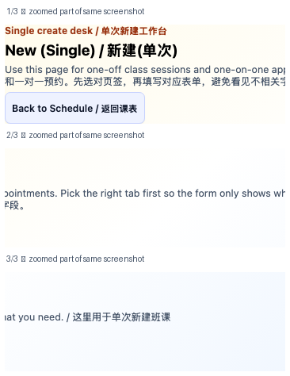
隔离环境示例；截图展示相关页面，具体操作以文字及当前界面为准。 / Isolated training example; screenshot provides context. Follow the text and current interface. 分段放大同一真实截图，按 1→2→3 阅读。 / Enlarged parts of one real screenshot, in order.
请按顺序完成
从 New (Single) / 新建单次入口选择正确页签及对象。
确认课次、约课或教室预约的用途；提交前检查冲突。
完成标志： 单节课出现在正确班级/学生的正式课表。
立即停止： 不清楚班课与一对一差别时停止，不试错提交。
中文流程 · 第 18 步，共 22 步
调课时明确原课次和范围。
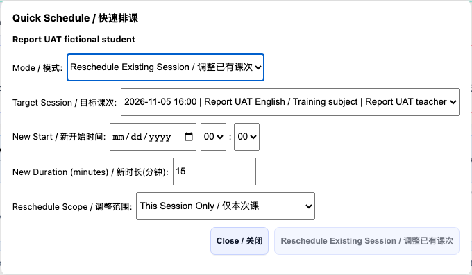
隔离环境示例；截图展示相关页面，具体操作以文字及当前界面为准。 / Isolated training example; screenshot provides context. Follow the text and current interface.
隔离环境示例；截图展示相关页面，具体操作以文字及当前界面为准。 / Isolated training example; screenshot provides context. Follow the text and current interface. 分段放大同一真实截图，按 1→2→3 阅读。 / Enlarged parts of one real screenshot, in order.
请按顺序完成
先打开原课次或对应工单的结构化操作。
核对学生、日期、扣课与通知影响；执行前按机构流程取得授权。
完成标志： 工单动作显示 Applied，正式课表与授权结果一致。
立即停止： 扣费口径、补课要求或替代老师不明确时停止并升级主管。
中文流程 · 第 20 步，共 22 步
处理冲突。
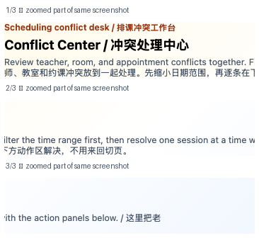
隔离环境示例；截图展示相关页面，具体操作以文字及当前界面为准。 / Isolated training example; screenshot provides context. Follow the text and current interface. 分段放大同一真实截图，按 1→2→3 阅读。 / Enlarged parts of one real screenshot, in order.
请按顺序完成
打开 Conflict Center / 冲突处理中心检查冲突原因。
逐项核对老师、学生和教室占用；不清楚时停止并联系负责人。
完成标志： 目标冲突消失，相关正式课次均符合最终安排。
立即停止： 无法判断应保留哪一节课时停止并联系负责人。
中文流程 · 第 21 步，共 22 步
核对正式课表并记录结果。
隔离环境示例；截图展示相关页面，具体操作以文字及当前界面为准。 / Isolated training example; screenshot provides context. Follow the text and current interface. 分段放大同一真实截图，按 1→2→3 阅读。 / Enlarged parts of one real screenshot, in order.
请按顺序完成
返回学生或正式课表，逐节核对日期、时间、老师、地点及状态。
将已完成或部分跳过结果写回工单，并通知相关负责人。
完成标志： 正式课表与工单完成结果一致，刷新后仍存在。
立即停止： 只看到聊天确认但正式课表没有课次时不得完成工单。
中文流程 · 第 22 步，共 22 步
未完成事项进入交接。
隔离环境示例；截图展示相关页面，具体操作以文字及当前界面为准。 / Isolated training example; screenshot provides context. Follow the text and current interface.
请按顺序完成
在工单记录负责人、阻塞原因、等待对象、下一步及跟进时间。
交接人重新打开工单确认，不用聊天记录代替系统状态。
完成标志： 交接卡包含六要素，下一班能直接继续执行。
立即停止： 不得用“已沟通”“跟进中”代替负责人、期限和下一步。
中文版 · 最终验收
以下项目全部确认后才能报告完成
员工自查
账号、平台、岗位和目标记录正确。
全部步骤按顺序完成。
刷新后仍看到预期最终状态。
已保存不含敏感信息的结果证据。
能说明出现异常时找谁处理。
停止并升级
缺少必要资料或权限。
页面、按钮或状态与教程不同。
未获授权却会影响财务、合同、课包、工资、真实课次或家长可见内容。
无法确认最终状态。
LANGUAGE DIVIDER
中文版到此结束
English section starts on the next page
ENGLISH SECTION · BEFORE YOU START
Complete these four checks before clicking
Prepare
Use your own account and role workspace.
Use training data unless a manager authorises real data.
Prepare the correct target, date, owner, and source records.
Keep this PDF beside the system and complete one numbered step at a time.
Never
Do not use another employee's account.
Do not guess names, amounts, dates, statuses, or missing fields.
Do not repeat Save, Apply, Approve, Publish, or Send when the result is unclear.
Stop and ask the owner when the page differs.
ENGLISH SECTION · WORKFLOW OVERVIEW · 1/2
Academic Web Scheduling: First Lessons, Continuation, Rescheduling, and Exceptions
1Confirm your Admin Workspace.
2Identify the request type.
3Open Students for new or continuation scheduling.
4Open the full list or search.
5Search and verify the student.
6Open the student record.
7Open Quick Schedule.
8Open Scheduling Work Orders for existing requests.
ENGLISH SECTION · WORKFLOW OVERVIEW · 2/2
Academic Web Scheduling: First Lessons, Continuation, Rescheduling, and Exceptions
9Check the ticket and owner.
10Check package balance and finance gate.
11Record parent availability.
12Check teacher availability and exceptions.
13Confirm candidate times and follow up.
14Complete Quick Schedule.
15Find a teacher and preview.
16Use Schedule after confirmation.
17Create a special one-off item using the correct tab.
18Choose the original lesson and reschedule scope.
19Link cancellations, leave and teacher replacement to the original lesson.
20Resolve conflicts.
21Verify the official timetable and record the outcome.
22Hand over unfinished work.
ENGLISH WORKFLOW · STEP 1 OF 22
Confirm your Admin Workspace.
本人管理工作台入口。 / Own admin workspace.
Complete in this order
Sign in with your own account and verify Admin Workspace.
Ask an administrator if the menu or permission differs.
Completion signal: The Admin Workspace, sidebar, and your own account are visible.
STOP: Stop if login opens the teacher portal, parent portal, or a page without the admin sidebar.
ENGLISH WORKFLOW · STEP 2 OF 22
Identify the request type.
隔离环境示例；截图展示相关页面，具体操作以文字及当前界面为准。 / Isolated training example; screenshot provides context. Follow the text and current interface. 分段放大同一真实截图，按 1→2→3 阅读。 / Enlarged parts of one real screenshot, in order.
Complete in this order
Distinguish new, continuation, reschedule, cancellation, leave and teacher replacement.
Use the existing coordination ticket where applicable to avoid duplicates.
Completion signal: You can state which entry route this request requires.
STOP: Stop if the student, course, or request type is unclear.
ENGLISH WORKFLOW · STEP 3 OF 22
Open Students for new or continuation scheduling.
隔离环境示例；截图展示相关页面，具体操作以文字及当前界面为准。 / Isolated training example; screenshot provides context. Follow the text and current interface.
Complete in this order
Open Students from the workspace.
Prepare the student name and course; do not rely on a similar name.
Completion signal: The page title says Students.
STOP: Stop and return to the dashboard if another page opens.
ENGLISH WORKFLOW · STEP 4 OF 22
Open the full list or search.
隔离环境示例；截图展示相关页面，具体操作以文字及当前界面为准。 / Isolated training example; screenshot provides context. Follow the text and current interface.
Complete in this order
If the page shows a queue, select Show full list.
Alternatively use the filters shown on your page.
Completion signal: Full List is selected.
STOP: Stop if the full list still shows zero students or the page errors.
ENGLISH WORKFLOW · STEP 5 OF 22
Search and verify the student.
隔离环境示例；截图展示相关页面，具体操作以文字及当前界面为准。 / Isolated training example; screenshot provides context. Follow the text and current interface. 分段放大同一真实截图，按 1→2→3 阅读。 / Enlarged parts of one real screenshot, in order.
Complete in this order
Enter the name and select Apply.
For duplicate names verify the student identifier and record.
Completion signal: The exact target student appears in the results.
STOP: For duplicate names, stop and verify school, grade, parent, or ID.
ENGLISH WORKFLOW · STEP 6 OF 22
Open the student record.
隔离环境示例；截图展示相关页面，具体操作以文字及当前界面为准。 / Isolated training example; screenshot provides context. Follow the text and current interface. 分段放大同一真实截图，按 1→2→3 阅读。 / Enlarged parts of one real screenshot, in order.
Complete in this order
Select the correct student to open Student Detail.
Verify the student, course and owner.
Completion signal: The correct name and Student Detail appear at the top.
STOP: Return to the student list immediately if the name, school, grade, or ID differs.
ENGLISH WORKFLOW · STEP 7 OF 22
Open Quick Schedule.
学生页面的快速排课弹窗。 / Quick Schedule dialog on the student page.
Complete in this order
Find Quick Schedule on the student page and open its dialog.
Verify the student name in the dialog.
Completion signal: The page moves to the Quick Schedule section or opens its form.
STOP: Do not force scheduling when coordination, an unpaid package, or a gate is shown first.
ENGLISH WORKFLOW · STEP 8 OF 22
Open Scheduling Work Orders for existing requests.
隔离环境示例；截图展示相关页面，具体操作以文字及当前界面为准。 / Isolated training example; screenshot provides context. Follow the text and current interface.
Complete in this order
Open Scheduling Work Orders and locate the request.
Choose the ticket or student entry point according to the task.
Completion signal: The page title says Scheduling Work Orders.
STOP: Do not click Ticket Center or Weekly Schedule by mistake.
ENGLISH WORKFLOW · STEP 9 OF 22
Check the ticket and owner.
隔离环境示例；截图展示相关页面，具体操作以文字及当前界面为准。 / Isolated training example; screenshot provides context. Follow the text and current interface. 分段放大同一真实截图，按 1→2→3 阅读。 / Enlarged parts of one real screenshot, in order.
Complete in this order
Open the ticket and verify student, request, status and owner.
Coordinate with an existing owner before acting.
Completion signal: The target ticket is open with a clear owner and deadline.
STOP: Stop when duplicate tickets or conflicting owners exist.
ENGLISH WORKFLOW · STEP 10 OF 22
Check package balance and finance gate.
隔离环境示例；截图展示相关页面，具体操作以文字及当前界面为准。 / Isolated training example; screenshot provides context. Follow the text and current interface.
Complete in this order
Verify course, balance, validity and schedulability in the student record and dialog.
If blocked, follow the message and contact Academic or Finance.
Completion signal: The correct package is schedulable with enough balance.
STOP: Stop for no active package, insufficient balance, expiry, or an uncleared finance gate.
ENGLISH WORKFLOW · STEP 11 OF 22
Record parent availability.
隔离环境示例；截图展示相关页面，具体操作以文字及当前界面为准。 / Isolated training example; screenshot provides context. Follow the text and current interface.
Complete in this order
Record available dates, time ranges, location and course in the coordination ticket.
Confirm uncertain information and retain a follow-up time.
Completion signal: The ticket shows parent availability and the next follow-up date.
STOP: Stop before scheduling if availability exists only in chat and is not recorded.
ENGLISH WORKFLOW · STEP 12 OF 22
Check teacher availability and exceptions.
隔离环境示例；截图展示相关页面，具体操作以文字及当前界面为准。 / Isolated training example; screenshot provides context. Follow the text and current interface.
Complete in this order
Inspect date-specific teacher slots; missing availability is not a refusal.
Use the ticket exception process for special times; a reply does not create a lesson.
Completion signal: The candidate has valid availability or explicitly accepted an exception.
STOP: Stop before Apply until the teacher confirms an exceptional time.
ENGLISH WORKFLOW · STEP 13 OF 22
Confirm candidate times and follow up.
隔离环境示例；截图展示相关页面，具体操作以文字及当前界面为准。 / Isolated training example; screenshot provides context. Follow the text and current interface.
Complete in this order
Prepare candidate times based on parent and teacher availability and record messages and replies.
The screenshot is a ticket example; use the actual candidate records.
Completion signal: The ticket shows options sent and a next follow-up time.
STOP: Keep the ticket open and do not force a session when no slot is available.
ENGLISH WORKFLOW · STEP 14 OF 22
Complete Quick Schedule.
隔离环境示例；截图展示相关页面，具体操作以文字及当前界面为准。 / Isolated training example; screenshot provides context. Follow the text and current interface.
Complete in this order
Choose course, subject, campus, room, start time, duration, repeat weeks and conflict handling.
Choose a room when required and check the balance and dates.
Completion signal: All fields are complete and the package preview is schedulable.
STOP: Stop if course, location, date, or duration differs from the parent's confirmation.
ENGLISH WORKFLOW · STEP 15 OF 22
Find a teacher and preview.
隔离环境示例；截图展示相关页面，具体操作以文字及当前界面为准。 / Isolated training example; screenshot provides context. Follow the text and current interface. 分段放大同一真实截图，按 1→2→3 阅读。 / Enlarged parts of one real screenshot, in order.
Complete in this order
Select Find Available Teachers, then Preview on the intended teacher row.
Review every available or conflicting occurrence, including repeated weeks.
Completion signal: All preview checks pass with the correct teacher, location, and package.
STOP: Stop for any conflict, stale preview, or teacher mismatch.
ENGLISH WORKFLOW · STEP 16 OF 22
Use Schedule after confirmation.
隔离环境示例；截图展示相关页面，具体操作以文字及当前界面为准。 / Isolated training example; screenshot provides context. Follow the text and current interface. 分段放大同一真实截图，按 1→2→3 阅读。 / Enlarged parts of one real screenshot, in order.
Complete in this order
Once authorised and the preview is correct, select Schedule once on the teacher row.
Check created and skipped counts; if uncertain, inspect the timetable before repeating.
Completion signal: The page returns success and the expected session count matches.
STOP: Do not resubmit after an unclear result, network interruption, or count mismatch.
ENGLISH WORKFLOW · STEP 17 OF 22
Create a special one-off item using the correct tab.
隔离环境示例；截图展示相关页面，具体操作以文字及当前界面为准。 / Isolated training example; screenshot provides context. Follow the text and current interface. 分段放大同一真实截图，按 1→2→3 阅读。 / Enlarged parts of one real screenshot, in order.
Complete in this order
Open New (Single) and choose the correct tab and object.
Confirm whether the item is a session, appointment or room reservation and check conflicts.
Completion signal: The single lesson appears on the correct class/student schedule.
STOP: Stop instead of trial submissions if class and one-to-one modes are unclear.
ENGLISH WORKFLOW · STEP 18 OF 22
Choose the original lesson and reschedule scope.
隔离环境示例；截图展示相关页面，具体操作以文字及当前界面为准。 / Isolated training example; screenshot provides context. Follow the text and current interface.
Complete in this order
In Quick Schedule select Reschedule Existing Session.
Choose target session, new time, duration and This Session Only or This + Future Sessions; review before submitting.
Completion signal: The original session changed within the authorised scope and no other sessions were altered.
STOP: Stop if the original session is missing, scope is unclear, or the lesson already occurred.
ENGLISH WORKFLOW · STEP 19 OF 22
Link cancellations, leave and teacher replacement to the original lesson.
隔离环境示例；截图展示相关页面，具体操作以文字及当前界面为准。 / Isolated training example; screenshot provides context. Follow the text and current interface. 分段放大同一真实截图，按 1→2→3 阅读。 / Enlarged parts of one real screenshot, in order.
Complete in this order
Open the original session or the corresponding structured ticket action.
Verify student, date, deduction and notification effects; obtain the required authorisation.
Completion signal: The ticket action is Applied and the official schedule matches the authorised result.
STOP: Stop and escalate if charge treatment, replacement need, or teacher is unclear.
ENGLISH WORKFLOW · STEP 20 OF 22
Resolve conflicts.
隔离环境示例；截图展示相关页面，具体操作以文字及当前界面为准。 / Isolated training example; screenshot provides context. Follow the text and current interface. 分段放大同一真实截图，按 1→2→3 阅读。 / Enlarged parts of one real screenshot, in order.
Complete in this order
Open Conflict Center and inspect the reason.
Check teacher, student and room occupancy; escalate uncertainty.
Completion signal: The target conflict is gone and all related sessions match the final arrangement.
STOP: Stop and contact the owner if you cannot determine which session should remain.
ENGLISH WORKFLOW · STEP 21 OF 22
Verify the official timetable and record the outcome.
隔离环境示例；截图展示相关页面，具体操作以文字及当前界面为准。 / Isolated training example; screenshot provides context. Follow the text and current interface. 分段放大同一真实截图，按 1→2→3 阅读。 / Enlarged parts of one real screenshot, in order.
Complete in this order
Return to the student record or timetable and verify each date, time, teacher, location and status.
Record completed or skipped results on the ticket and notify the responsible staff.
Completion signal: The official schedule and ticket result match and remain after refresh.
STOP: Do not complete the ticket when chat confirms it but no official session exists.
ENGLISH WORKFLOW · STEP 22 OF 22
Hand over unfinished work.
隔离环境示例；截图展示相关页面，具体操作以文字及当前界面为准。 / Isolated training example; screenshot provides context. Follow the text and current interface.
Complete in this order
Record ticket owner, blocker, waiting party, next action and follow-up time.
The receiving staff member should reopen the ticket; chat alone is not system status.
Completion signal: The handover contains all six elements and the next shift can act immediately.
STOP: Do not replace owner, deadline, and next action with vague notes such as 'communicated' or 'following up'.
ENGLISH SECTION · FINAL CHECK
Report completion only when every item is true
Employee self-check
The account, platform, role, and target record are correct.
Every step was completed in order.
The expected final status remains after refresh.
Non-sensitive evidence of the result was saved.
You can explain who handles an exception.
Stop and escalate
Required data or permission is missing.
The page, button, or status differs from the guide.
An unauthorised action would affect finance, contracts, packages, payroll, live sessions, or parent-visible content.